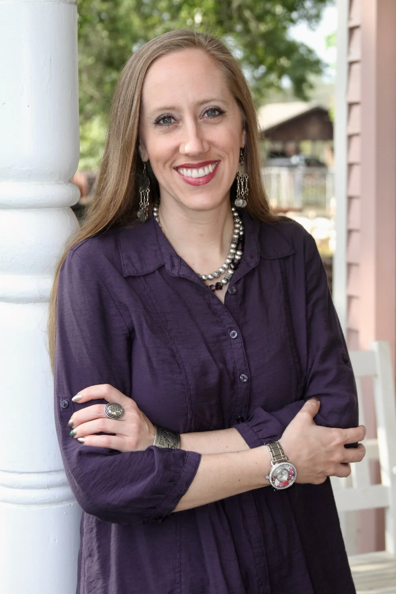
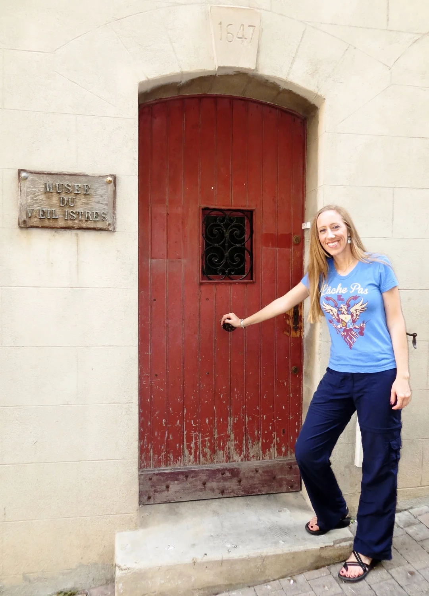

Historian, author, and founder of Belle Heritage.

Dr. Elista Istre is an avid traveler with a passion for cultures across the globe. She founded Belle Heritage to offer consulting expertise and create cultural experiences that inspire people and organizations to celebrate the beauty of heritage.
A descendant of Cajuns, French Creoles, and Spanish Isleños, she is a native and lifelong resident of Lafayette, Louisiana — and has spent more than twenty-five years sharing that heritage with audiences at home and abroad.
Istre earned her B.A. in History and M.A. in Public History from the University of Louisiana at Lafayette, studying abroad at the Universidad de Sevilla in Spain. Graduating with top honors, she worked for years in the museum world before teaching English as a second language in the U.S. and Africa, then completed her Ph.D. in Heritage Studies at Arkansas State University.
She has established, directed, and supported museums and historic sites across Louisiana — including Vermilionville, a Cajun & Creole Heritage and Folklife Park in Lafayette; Longfellow-Evangeline State Historic Site in St. Martinville; and the Louisiana Military Museum in Abbeville. She also established and directed Historic Dyess Colony: Boyhood Home of Johnny Cash in Arkansas, and worked with the U.S. Army's Center for Military History at Army museums nationwide.
Istre has published and presented nationally and internationally, and advised on film productions including the live concert The Johnny Cash Music Festival: 2011 and the documentary First Cousins: Cajun and Creole Music in South Louisiana, where she served as historical consultant and assistant director. She authored Creoles of South Louisiana: Three Centuries Strong and the children's book Josette and Friends Cook a Gumbo.
She served on the board of the National Association for Interpretation and directed its Cultural and Historical Interpretation section for many years. Among the first in the U.S. to earn a Master Certification in living history, she now serves as Louisiana's inaugural regional director in the ArkLaHoma Living History Association, and sits on advisory councils for Northwestern State University's Creole Heritage Center and UL Lafayette's Public History program.

Inspired by the Scripture "Truly, I have a beautiful heritage" (Psalm 16:6), Istre named her company Belle Heritage as a tribute to her French roots — belle is French for "beautiful," and the first language of her grandparents — and to the universal beauty of heritage worldwide.
Work With Elista